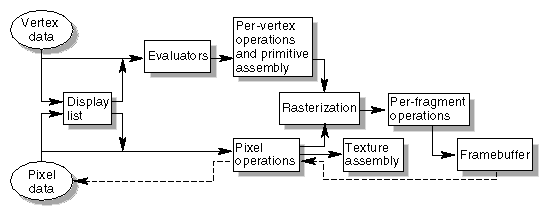
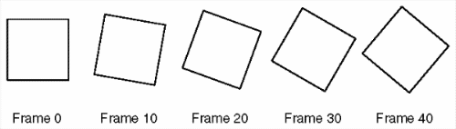

This chapter introduces OpenGL. It has the following major sections:
What Is OpenGL?
OpenGL is a software interface to graphics hardware. This interface consists of about 150 distinct commands that you use to specify the objects and operations needed to produce interactive three-dimensional applications.
OpenGL is designed as a streamlined, hardware-independent interface to be implemented on many different hardware platforms. To achieve these qualities, no commands for performing windowing tasks or obtaining user input are included in OpenGL; instead, you must work through whatever windowing system controls the particular hardware you're using. Similarly, OpenGL doesn't provide high-level commands for describing models of three-dimensional objects. Such commands might allow you to specify relatively complicated shapes such as automobiles, parts of the body, airplanes, or molecules. With OpenGL, you must build up your desired model from a small set of geometric primitives - points, lines, and polygons.
A sophisticated library that provides these features could certainly be built on top of OpenGL. The OpenGL Utility Library (GLU) provides many of the modeling features, such as quadric surfaces and NURBS curves and surfaces. GLU is a standard part of every OpenGL implementation. Also, there is a higher-level, object-oriented toolkit, Open Inventor, which is built atop OpenGL, and is available separately for many implementations of OpenGL. (See "OpenGL-Related Libraries" for more information about Open Inventor.)
Now that you know what OpenGL doesn't do, here's what it does do. Take a look at the color plates - they illustrate typical uses of OpenGL. They show the scene on the cover of this book, rendered (which is to say, drawn) by a computer using OpenGL in successively more complicated ways. The following list describes in general terms how these pictures were made.
- "Plate 1" shows the entire scene displayed as a wireframe model - that is, as if all the objects in the scene were made of wire. Each line of wire corresponds to an edge of a primitive (typically a polygon). For example, the surface of the table is constructed from triangular polygons that are positioned like slices of pie.
Note that you can see portions of objects that would be obscured if the objects were solid rather than wireframe. For example, you can see the entire model of the hills outside the window even though most of this model is normally hidden by the wall of the room. The globe appears to be nearly solid because it's composed of hundreds of colored blocks, and you see the wireframe lines for all the edges of all the blocks, even those forming the back side of the globe. The way the globe is constructed gives you an idea of how complex objects can be created by assembling lower-level objects.
- "Plate 2" shows a depth-cued version of the same wireframe scene. Note that the lines farther from the eye are dimmer, just as they would be in real life, thereby giving a visual cue of depth. OpenGL uses atmospheric effects (collectively referred to as fog) to achieve depth cueing.
- "Plate 3" shows an antialiased version of the wireframe scene. Antialiasing is a technique for reducing the jagged edges (also known as jaggies) created when approximating smooth edges using pixels - short for picture elements - which are confined to a rectangular grid. Such jaggies are usually the most visible with near-horizontal or near-vertical lines.
- "Plate 4" shows a flat-shaded, unlit version of the scene. The objects in the scene are now shown as solid. They appear "flat" in the sense that only one color is used to render each polygon, so they don't appear smoothly rounded. There are no effects from any light sources.
- "Plate 5" shows a lit, smooth-shaded version of the scene. Note how the scene looks much more realistic and three-dimensional when the objects are shaded to respond to the light sources in the room as if the objects were smoothly rounded.
- "Plate 6" adds shadows and textures to the previous version of the scene. Shadows aren't an explicitly defined feature of OpenGL (there is no "shadow command"), but you can create them yourself using the techniques described in Chapter 14. Texture mapping allows you to apply a two-dimensional image onto a three-dimensional object. In this scene, the top on the table surface is the most vibrant example of texture mapping. The wood grain on the floor and table surface are all texture mapped, as well as the wallpaper and the toy top (on the table).
- "Plate 7" shows a motion-blurred object in the scene. The sphinx (or dog, depending on your Rorschach tendencies) appears to be captured moving forward, leaving a blurred trace of its path of motion.
- "Plate 8" shows the scene as it's drawn for the cover of the book from a different viewpoint. This plate illustrates that the image really is a snapshot of models of three-dimensional objects.
- "Plate 9" brings back the use of fog, which was seen in "Plate 2," to show the presence of smoke particles in the air. Note how the same effect in "Plate 2" now has a more dramatic impact in "Plate 9."
- "Plate 10" shows the depth-of-field effect, which simulates the inability of a camera lens to maintain all objects in a photographed scene in focus. The camera focuses on a particular spot in the scene. Objects that are significantly closer or farther than that spot are somewhat blurred.
The color plates give you an idea of the kinds of things you can do with the OpenGL graphics system. The following list briefly describes the major graphics operations which OpenGL performs to render an image on the screen. (See "OpenGL Rendering Pipeline" for detailed information about this order of operations.)
Construct shapes from geometric primitives, thereby creating mathematical descriptions of objects. (OpenGL considers points, lines, polygons, images, and bitmaps to be primitives.)
Arrange the objects in three-dimensional space and select the desired vantage point for viewing the composed scene.
Calculate the color of all the objects. The color might be explicitly assigned by the application, determined from specified lighting conditions, obtained by pasting a texture onto the objects, or some combination of these three actions.
Convert the mathematical description of objects and their associated color information to pixels on the screen. This process is called rasterization.
During these stages, OpenGL might perform other operations, such as eliminating parts of objects that are hidden by other objects. In addition, after the scene is rasterized but before it's drawn on the screen, you can perform some operations on the pixel data if you want.
In some implementations (such as with the X Window System), OpenGL is designed to work even if the computer that displays the graphics you create isn't the computer that runs your graphics program. This might be the case if you work in a networked computer environment where many computers are connected to one another by a digital network. In this situation, the computer on which your program runs and issues OpenGL drawing commands is called the client, and the computer that receives those commands and performs the drawing is called the server. The format for transmitting OpenGL commands (called the protocol) from the client to the server is always the same, so OpenGL programs can work across a network even if the client and server are different kinds of computers. If an OpenGL program isn't running across a network, then there's only one computer, and it is both the client and the server.
Example 1-1 : Chunk of OpenGL Code
#include <whateverYouNeed.h>
main() {
InitializeAWindowPlease();
glClearColor (0.0, 0.0, 0.0, 0.0);
glClear (GL_COLOR_BUFFER_BIT);
glColor3f (1.0, 1.0, 1.0);
glOrtho(0.0, 1.0, 0.0, 1.0, -1.0, 1.0);
glBegin(GL_POLYGON);
glVertex3f (0.25, 0.25, 0.0);
glVertex3f (0.75, 0.25, 0.0);
glVertex3f (0.75, 0.75, 0.0);
glVertex3f (0.25, 0.75, 0.0);
glEnd();
glFlush();
UpdateTheWindowAndCheckForEvents();
}
The first line of the main() routine initializes a window on the screen: The InitializeAWindowPlease() routine is meant as a placeholder for window system-specific routines, which are generally not OpenGL calls. The next two lines are OpenGL commands that clear the window to black: glClearColor() establishes what color the window will be cleared to, and glClear() actually clears the window. Once the clearing color is set, the window is cleared to that color whenever glClear() is called. This clearing color can be changed with another call to glClearColor(). Similarly, the glColor3f() command establishes what color to use for drawing objects - in this case, the color is white. All objects drawn after this point use this color, until it's changed with another call to set the color.
The next OpenGL command used in the program, glOrtho(), specifies the coordinate system OpenGL assumes as it draws the final image and how the image gets mapped to the screen. The next calls, which are bracketed by glBegin() and glEnd(), define the object to be drawn - in this example, a polygon with four vertices. The polygon's "corners" are defined by the glVertex3f() commands. As you might be able to guess from the arguments, which are (x, y, z) coordinates, the polygon is a rectangle on the z=0 plane.
Finally, glFlush() ensures that the drawing commands are actually executed rather than stored in a buffer awaiting additional OpenGL commands. The UpdateTheWindowAndCheckForEvents() placeholder routine manages the contents of the window and begins event processing.
Actually, this piece of OpenGL code isn't well structured. You may be asking, "What happens if I try to move or resize the window?" Or, "Do I need to reset the coordinate system each time I draw the rectangle?" Later in this chapter, you will see replacements for both InitializeAWindowPlease() and UpdateTheWindowAndCheckForEvents() that actually work but will require restructuring the code to make it efficient.
are equivalent, except that the first specifies the vertex's coordinates as 32-bit integers, and the second specifies them as single-precision floating-point numbers.
Note: Implementations of OpenGL have leeway in selecting which C data type to use to represent OpenGL data types. If you resolutely use the OpenGL defined data types throughout your application, you will avoid mismatched types when porting your code between different implementations.
Finally, OpenGL defines the typedef GLvoid. This is most often used for OpenGL commands that accept pointers to arrays of values.
In the rest of this guide (except in actual code examples), OpenGL commands are referred to by their base names only, and an asterisk is included to indicate that there may be more to the command name. For example, glColor*() stands for all variations of the command you use to set the current color. If we want to make a specific point about one version of a particular command, we include the suffix necessary to define that version. For example, glVertex*v() refers to all the vector versions of the command you use to specify vertices.

Figure 1-2 : Order of Operations
Now you'll see more detail about the key stages in the OpenGL rendering pipeline.
Display Lists
All data, whether it describes geometry or pixels, can be saved in a display list for current or later use. (The alternative to retaining data in a display list is processing the data immediately - also known as immediate mode.) When a display list is executed, the retained data is sent from the display list just as if it were sent by the application in immediate mode. (See Chapter 7 for more information about display lists.)
Evaluators
All geometric primitives are eventually described by vertices. Parametric curves and surfaces may be initially described by control points and polynomial functions called basis functions. Evaluators provide a method to derive the vertices used to represent the surface from the control points. The method is a polynomial mapping, which can produce surface normal, texture coordinates, colors, and spatial coordinate values from the control points. (See Chapter 12 to learn more about evaluators.)
Per-Vertex Operations
For vertex data, next is the "per-vertex operations" stage, which converts the vertices into primitives. Some vertex data (for example, spatial coordinates) are transformed by 4 x 4 floating-point matrices. Spatial coordinates are projected from a position in the 3D world to a position on your screen. (See Chapter 3 for details about the transformation matrices.)
If advanced features are enabled, this stage is even busier. If texturing is used, texture coordinates may be generated and transformed here. If lighting is enabled, the lighting calculations are performed using the transformed vertex, surface normal, light source position, material properties, and other lighting information to produce a color value.
Primitive Assembly
Clipping, a major part of primitive assembly, is the elimination of portions of geometry which fall outside a half-space, defined by a plane. Point clipping simply passes or rejects vertices; line or polygon clipping can add additional vertices depending upon how the line or polygon is clipped.
In some cases, this is followed by perspective division, which makes distant geometric objects appear smaller than closer objects. Then viewport and depth (z coordinate) operations are applied. If culling is enabled and the primitive is a polygon, it then may be rejected by a culling test. Depending upon the polygon mode, a polygon may be drawn as points or lines. (See "Polygon Details" in Chapter 2.)
The results of this stage are complete geometric primitives, which are the transformed and clipped vertices with related color, depth, and sometimes texture-coordinate values and guidelines for the rasterization step.
Pixel Operations
While geometric data takes one path through the OpenGL rendering pipeline, pixel data takes a different route. Pixels from an array in system memory are first unpacked from one of a variety of formats into the proper number of components. Next the data is scaled, biased, and processed by a pixel map. The results are clamped and then either written into texture memory or sent to the rasterization step. (See "Imaging Pipeline" in Chapter 8.)
If pixel data is read from the frame buffer, pixel-transfer operations (scale, bias, mapping, and clamping) are performed. Then these results are packed into an appropriate format and returned to an array in system memory.
There are special pixel copy operations to copy data in the framebuffer to other parts of the framebuffer or to the texture memory. A single pass is made through the pixel transfer operations before the data is written to the texture memory or back to the framebuffer.
Texture Assembly
An OpenGL application may wish to apply texture images onto geometric objects to make them look more realistic. If several texture images are used, it's wise to put them into texture objects so that you can easily switch among them.
Some OpenGL implementations may have special resources to accelerate texture performance. There may be specialized, high-performance texture memory. If this memory is available, the texture objects may be prioritized to control the use of this limited and valuable resource. (See Chapter 9.)
Rasterization
Rasterization is the conversion of both geometric and pixel data into fragments. Each fragment square corresponds to a pixel in the framebuffer. Line and polygon stipples, line width, point size, shading model, and coverage calculations to support antialiasing are taken into consideration as vertices are connected into lines or the interior pixels are calculated for a filled polygon. Color and depth values are assigned for each fragment square.
Fragment Operations
Before values are actually stored into the framebuffer, a series of operations are performed that may alter or even throw out fragments. All these operations can be enabled or disabled.
The first operation which may be encountered is texturing, where a texel (texture element) is generated from texture memory for each fragment and applied to the fragment. Then fog calculations may be applied, followed by the scissor test, the alpha test, the stencil test, and the depth-buffer test (the depth buffer is for hidden-surface removal). Failing an enabled test may end the continued processing of a fragment's square. Then, blending, dithering, logical operation, and masking by a bitmask may be performed. (See Chapter 6 and Chapter 10) Finally, the thoroughly processedfragment is drawn into the appropriate buffer, where it has finally advanced to be a pixel and achieved its final resting place.
OpenGL-Related Libraries
OpenGL provides a powerful but primitive set of rendering commands, and all higher-level drawing must be done in terms of these commands. Also, OpenGL programs have to use the underlying mechanisms of the windowing system. A number of libraries exist to allow you to simplify your programming tasks, including the following:
- The OpenGL Utility Library (GLU) contains several routines that use lower-level OpenGL commands to perform such tasks as setting up matrices for specific viewing orientations and projections, performing polygon tessellation, and rendering surfaces. This library is provided as part of every OpenGL implementation. Portions of the GLU are described in the OpenGL Reference Manual. The more useful GLU routines are described in this guide, where they're relevant to the topic being discussed, such as in all of Chapter 11 and in the section "The GLU NURBS Interface" in Chapter 12. GLU routines use the prefix glu.
- For every window system, there is a library that extends the functionality of that window system to support OpenGL rendering. For machines that use the X Window System, the OpenGL Extension to the X Window System (GLX) is provided as an adjunct to OpenGL. GLX routines use the prefix glX. For Microsoft Windows, the WGL routines provide the Windows to OpenGL interface. All WGL routines use the prefix wgl. For IBM OS/2, the PGL is the Presentation Manager to OpenGL interface, and its routines use the prefix pgl.
All these window system extension libraries are described in more detail in both Appendix C. In addition, the GLX routines are also described in the OpenGL Reference Manual.
- The OpenGL Utility Toolkit (GLUT) is a window system-independent toolkit, written by Mark Kilgard, to hide the complexities of differing window system APIs. GLUT is the subject of the next section, and it's described in more detail in Mark Kilgard's book OpenGL Programming for the X Window System (ISBN 0-201-48359-9). GLUT routines use the prefix glut. "How to Obtain the Sample Code" in the Preface describes how to obtain the source code for GLUT, using ftp.
- Open Inventor is an object-oriented toolkit based on OpenGL which provides objects and methods for creating interactive three-dimensional graphics applications. Open Inventor, which is written in C++, provides prebuilt objects and a built-in event model for user interaction, high-level application components for creating and editing three-dimensional scenes, and the ability to print objects and exchange data in other graphics formats. Open Inventor is separate from OpenGL.
Include Files
For all OpenGL applications, you want to include the gl.h header file in every file. Almost all OpenGL applications use GLU, the aforementioned OpenGL Utility Library, which requires inclusion of the glu.h header file. So almost every OpenGL source file begins with
#include <GL/gl.h>
#include <GL/glu.h>
If you are directly accessing a window interface library to support OpenGL, such as GLX, AGL, PGL, or WGL, you must include additional header files. For example, if you are calling GLX, you may need to add these lines to your code
#include <X11/Xlib.h>
#include <GL/glx.h>
If you are using GLUT for managing your window manager tasks, you should include
#include <GL/glut.h>
Note that glut.h includes gl.h, glu.h, and glx.h automatically, so including all three files is redundant. GLUT for Microsoft Windows includes the appropriate header file to access WGL.
GLUT, the OpenGL Utility Toolkit
As you know, OpenGL contains rendering commands but is designed to be independent of any window system or operating system. Consequently, it contains no commands for opening windows or reading events from the keyboard or mouse. Unfortunately, it's impossible to write a complete graphics program without at least opening a window, and most interesting programs require a bit of user input or other services from the operating system or window system. In many cases, complete programs make the most interesting examples, so this book uses GLUT to simplify opening windows, detecting input, and so on. If you have an implementation of OpenGL and GLUT on your system, the examples in this book should run without change when linked with them.
In addition, since OpenGL drawing commands are limited to those that generate simple geometric primitives (points, lines, and polygons), GLUT includes several routines that create more complicated three-dimensional objects such as a sphere, a torus, and a teapot. This way, snapshots of program output can be interesting to look at. (Note that the OpenGL Utility Library, GLU, also has quadrics routines that create some of the same three-dimensional objects as GLUT, such as a sphere, cylinder, or cone.)
GLUT may not be satisfactory for full-featured OpenGL applications, but you may find it a useful starting point for learning OpenGL. The rest of this section briefly describes a small subset of GLUT routines so that you can follow the programming examples in the rest of this book. (See Appendix D for more details about this subset of GLUT, or see Chapters 4 and 5 of OpenGL Programming for the X Window System for information about the rest of GLUT.)
Window Management
Five routines perform tasks necessary to initialize a window.
- glutInit
(int *argc, char **argv) initializes GLUT and processes any command line arguments (for X, this would be options like -display and -geometry). glutInit() should be called before any other GLUT routine.
- glutInitDisplayMode
(unsigned int mode) specifies whether to use an RGBA or color-index color model. You can also specify whether you want a single- or double-buffered window. (If you're working in color-index mode, you'll want to load certain colors into the color map; use glutSetColor() to do this.) Finally, you can use this routine to indicate that you want the window to have an associated depth, stencil, and/or accumulation buffer. For example, if you want a window with double buffering, the RGBA color model, and a depth buffer, you might call glutInitDisplayMode(GLUT_DOUBLE | GLUT_RGB | GLUT_DEPTH).
- glutInitWindowPosition
(int x, int y) specifies the screen location for the upper-left corner of your window.
- glutInitWindowSize
(int width, int size) specifies the size, in pixels, of your window.
- int glutCreateWindow(char *string) creates a window with an OpenGL context. It returns a unique identifier for the new window. Be warned: Until glutMainLoop() is called (see next section), the window is not yet displayed.
The Display Callback
glutDisplayFunc(void (*func)(void)) is the first and most important event callback function you will see. Whenever GLUT determines the contents of the window need to be redisplayed, the callback function registered by glutDisplayFunc() is executed. Therefore, you should put all the routines you need to redraw the scene in the display callback function.
If your program changes the contents of the window, sometimes you will have to call glutPostRedisplay(void), which gives glutMainLoop() a nudge to call the registered display callback at its next opportunity.
Running the Program
The very last thing you must do is call glutMainLoop(void). All windows that have been created are now shown, and rendering to those windows is now effective. Event processing begins, and the registered display callback is triggered. Once this loop is entered, it is never exited!
Example 1-2 shows how you might use GLUT to create the simple program shown in Example 1-1. Note the restructuring of the code. To maximize efficiency, operations that need only be called once (setting the background color and coordinate system) are now in a procedure called init(). Operations to render (and possibly re-render) the scene are in the display() procedure, which is the registered GLUT display callback.
Example 1-2 : Simple OpenGL Program Using GLUT: hello.c
#include <GL/gl.h>
#include <GL/glut.h>
void display(void)
{
/* clear all pixels */
glClear (GL_COLOR_BUFFER_BIT);
/* draw white polygon (rectangle) with corners at
* (0.25, 0.25, 0.0) and (0.75, 0.75, 0.0)
*/
glColor3f (1.0, 1.0, 1.0);
glBegin(GL_POLYGON);
glVertex3f (0.25, 0.25, 0.0);
glVertex3f (0.75, 0.25, 0.0);
glVertex3f (0.75, 0.75, 0.0);
glVertex3f (0.25, 0.75, 0.0);
glEnd();
/* don't wait!
* start processing buffered OpenGL routines
*/
glFlush ();
}
void init (void)
{
/* select clearing (background) color */
glClearColor (0.0, 0.0, 0.0, 0.0);
/* initialize viewing values */
glMatrixMode(GL_PROJECTION);
glLoadIdentity();
glOrtho(0.0, 1.0, 0.0, 1.0, -1.0, 1.0);
}
/*
* Declare initial window size, position, and display mode
* (single buffer and RGBA). Open window with "hello"
* in its title bar. Call initialization routines.
* Register callback function to display graphics.
* Enter main loop and process events.
*/
int main(int argc, char** argv)
{
glutInit(&argc, argv);
glutInitDisplayMode (GLUT_SINGLE | GLUT_RGB);
glutInitWindowSize (250, 250);
glutInitWindowPosition (100, 100);
glutCreateWindow ("hello");
init ();
glutDisplayFunc(display);
glutMainLoop();
return 0; /* ISO C requires main to return int. */
}
Handling Input Events
You can use these routines to register callback commands that are invoked when specified events occur.
- glutReshapeFunc
(void (*func)(int w, int h)) indicates what action should be taken when the window is resized.
- glutKeyboardFunc
(void (*func)(unsigned char key, int x, int y)) and glutMouseFunc(void (*func)(int button, int state, int x, int y)) allow you to link a keyboard key or a mouse button with a routine that's invoked when the key or mouse button is pressed or released.
- glutMotionFunc
(void (*func)(int x, int y)) registers a routine to call back when the mouse is moved while a mouse button is also pressed.
Managing a Background Process
You can specify a function that's to be executed if no other events are pending - for example, when the event loop would otherwise be idle - with glutIdleFunc(void (*func)(void)). This routine takes a pointer to the function as its only argument. Pass in NULL (zero) to disable the execution of the function.
Drawing Three-Dimensional Objects
GLUT includes several routines for drawing these three-dimensional objects:
You can draw these objects as wireframes or as solid shaded objects with surface normals defined. For example, the routines for a cube and a sphere are as follows:
All these models are drawn centered at the origin of the world coordinate system. (See for information on the prototypes of all these drawing routines.)
Animation
One of the most exciting things you can do on a graphics computer is draw pictures that move. Whether you're an engineer trying to see all sides of a mechanical part you're designing, a pilot learning to fly an airplane using a simulation, or merely a computer-game aficionado, it's clear that animation is an important part of computer graphics.
In a movie theater, motion is achieved by taking a sequence of pictures and projecting them at 24 per second on the screen. Each frame is moved into position behind the lens, the shutter is opened, and the frame is displayed. The shutter is momentarily closed while the film is advanced to the next frame, then that frame is displayed, and so on. Although you're watching 24 different frames each second, your brain blends them all into a smooth animation. (The old Charlie Chaplin movies were shot at 16 frames per second and are noticeably jerky.) In fact, most modern projectors display each picture twice at a rate of 48 per second to reduce flickering. Computer-graphics screens typically refresh (redraw the picture) approximately 60 to 76 times per second, and some even run at about 120 refreshes per second. Clearly, 60 per second is smoother than 30, and 120 is marginally better than 60. Refresh rates faster than 120, however, are beyond the point of diminishing returns, since the human eye is only so good.
The key reason that motion picture projection works is that each frame is complete when it is displayed. Suppose you try to do computer animation of your million-frame movie with a program like this:
open_window();
for (i = 0; i < 1000000; i++) {
clear_the_window();
draw_frame(i);
wait_until_a_24th_of_a_second_is_over();
}
If you add the time it takes for your system to clear the screen and to draw a typical frame, this program gives more and more disturbing results depending on how close to 1/24 second it takes to clear and draw. Suppose the drawing takes nearly a full 1/24 second. Items drawn first are visible for the full 1/24 second and present a solid image on the screen; items drawn toward the end are instantly cleared as the program starts on the next frame. They present at best a ghostlike image, since for most of the 1/24 second your eye is viewing the cleared background instead of the items that were unlucky enough to be drawn last. The problem is that this program doesn't display completely drawn frames; instead, you watch the drawing as it happens.
Most OpenGL implementations provide double-buffering - hardware or software that supplies two complete color buffers. One is displayed while the other is being drawn. When the drawing of a frame is complete, the two buffers are swapped, so the one that was being viewed is now used for drawing, and vice versa. This is like a movie projector with only two frames in a loop; while one is being projected on the screen, an artist is desperately erasing and redrawing the frame that's not visible. As long as the artist is quick enough, the viewer notices no difference between this setup and one where all the frames are already drawn and the projector is simply displaying them one after the other. With double-buffering, every frame is shown only when the drawing is complete; the viewer never sees a partially drawn frame.
A modified version of the preceding program that does display smoothly animated graphics might look like this:
open_window_in_double_buffer_mode();
for (i = 0; i < 1000000; i++) {
clear_the_window();
draw_frame(i);
swap_the_buffers();
}
The Refresh That Pauses
For some OpenGL implementations, in addition to simply swapping the viewable and drawable buffers, the swap_the_buffers() routine waits until the current screen refresh period is over so that the previous buffer is completely displayed. This routine also allows the new buffer to be completely displayed, starting from the beginning. Assuming that your system refreshes the display 60 times per second, this means that the fastest frame rate you can achieve is 60 frames per second (fps), and if all your frames can be cleared and drawn in under 1/60 second, your animation will run smoothly at that rate.
What often happens on such a system is that the frame is too complicated to draw in 1/60 second, so each frame is displayed more than once. If, for example, it takes 1/45 second to draw a frame, you get 30 fps, and the graphics are idle for 1/30-1/45=1/90 second per frame, or one-third of the time.
In addition, the video refresh rate is constant, which can have some unexpected performance consequences. For example, with the 1/60 second per refresh monitor and a constant frame rate, you can run at 60 fps, 30 fps, 20 fps, 15 fps, 12 fps, and so on (60/1, 60/2, 60/3, 60/4, 60/5, ...). That means that if you're writing an application and gradually adding features (say it's a flight simulator, and you're adding ground scenery), at first each feature you add has no effect on the overall performance - you still get 60 fps. Then, all of a sudden, you add one new feature, and the system can't quite draw the whole thing in 1/60 of a second, so the animation slows from 60 fps to 30 fps because it misses the first possible buffer-swapping time. A similar thing happens when the drawing time per frame is more than 1/30 second - the animation drops from 30 to 20 fps.
If the scene's complexity is close to any of the magic times (1/60 second, 2/60 second, 3/60 second, and so on in this example), then because of random variation, some frames go slightly over the time and some slightly under. Then the frame rate is irregular, which can be visually disturbing. In this case, if you can't simplify the scene so that all the frames are fast enough, it might be better to add an intentional, tiny delay to make sure they all miss, giving a constant, slower, frame rate. If your frames have drastically different complexities, a more sophisticated approach might be necessary.
Motion = Redraw + Swap
The structure of real animation programs does not differ too much from this description. Usually, it is easier to redraw the entire buffer from scratch for each frame than to figure out which parts require redrawing. This is especially true with applications such as three-dimensional flight simulators where a tiny change in the plane's orientation changes the position of everything outside the window.
In most animations, the objects in a scene are simply redrawn with different transformations - the viewpoint of the viewer moves, or a car moves down the road a bit, or an object is rotated slightly. If significant recomputation is required for non-drawing operations, the attainable frame rate often slows down. Keep in mind, however, that the idle time after the swap_the_buffers() routine can often be used for such calculations.
OpenGL doesn't have a swap_the_buffers() command because the feature might not be available on all hardware and, in any case, it's highly dependent on the window system. For example, if you are using the X Window System and accessing it directly, you might use the following GLX routine:
void glXSwapBuffers(Display *dpy, Window window);
(See Appendix C for equivalent routines for other window systems.)
If you are using the GLUT library, you'll want to call this routine:
void glutSwapBuffers(void);
Example 1-3 illustrates the use of glutSwapBuffers() in an example that draws a spinning square as shown in Figure 1-3. The following example also shows how to use GLUT to control an input device and turn on and off an idle function. In this example, the mouse buttons toggle the spinning on and off.

Figure 1-3 : Double-Buffered Rotating Square
Example 1-3 : Double-Buffered Program: double.c
#include <GL/gl.h>
#include <GL/glu.h>
#include <GL/glut.h>
#include <stdlib.h>
static GLfloat spin = 0.0;
void init(void)
{
glClearColor (0.0, 0.0, 0.0, 0.0);
glShadeModel (GL_FLAT);
}
void display(void)
{
glClear(GL_COLOR_BUFFER_BIT);
glPushMatrix();
glRotatef(spin, 0.0, 0.0, 1.0);
glColor3f(1.0, 1.0, 1.0);
glRectf(-25.0, -25.0, 25.0, 25.0);
glPopMatrix();
glutSwapBuffers();
}
void spinDisplay(void)
{
spin = spin + 2.0;
if (spin > 360.0)
spin = spin - 360.0;
glutPostRedisplay();
}
void reshape(int w, int h)
{
glViewport (0, 0, (GLsizei) w, (GLsizei) h);
glMatrixMode(GL_PROJECTION);
glLoadIdentity();
glOrtho(-50.0, 50.0, -50.0, 50.0, -1.0, 1.0);
glMatrixMode(GL_MODELVIEW);
glLoadIdentity();
}
void mouse(int button, int state, int x, int y)
{
switch (button) {
case GLUT_LEFT_BUTTON:
if (state == GLUT_DOWN)
glutIdleFunc(spinDisplay);
break;
case GLUT_MIDDLE_BUTTON:
if (state == GLUT_DOWN)
glutIdleFunc(NULL);
break;
default:
break;
}
}
/*
* Request double buffer display mode.
* Register mouse input callback functions
*/
int main(int argc, char** argv)
{
glutInit(&argc, argv);
glutInitDisplayMode (GLUT_DOUBLE | GLUT_RGB);
glutInitWindowSize (250, 250);
glutInitWindowPosition (100, 100);
glutCreateWindow (argv[0]);
init ();
glutDisplayFunc(display);
glutReshapeFunc(reshape);
glutMouseFunc(mouse);
glutMainLoop();
return 0;
}